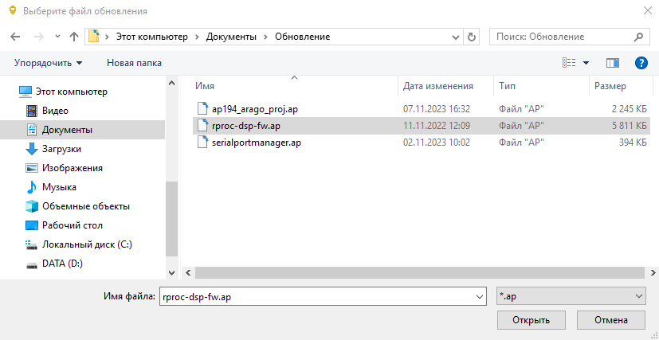

1. Системные требования
| # | Компонент | Требования |
|---|---|---|
| 1 | Операционная система | Windows 8.1 32/64 Bit, Windows 8 32/64 Bit, Windows 7 32/64 Bit, Windows Vista 32/64 Bit, Windows 10 32/64 Bit |
| 2 | CPU | Intel Core 2 Duo или Phenom II x4/x6 и выше |
| 3 | ОЗУ | 2 GB |
| 4 | Место на жестком диске | 250 МБ |
2. Описание программы
Программа предназначена для считывания сохраненных точек с приборов АП-019(кроме АП-019.1, АП-019.3, АП-019.4), отображения их на карте, редактирования взаимосвязи между точками (построения трека), сохранения трека в базу данных, а также в KML, CSV, XLSX форматы. Все считаные точки сохраняются в базу данных. База данных хранится в папке с исполняемым файлом exe. Имя базы данных «Record.sqlite».
3. Использование
3.1 Интерфейс программы

Основной интерфейс программы состоит из следующих элементов:
- Панель инструментов обеспечивает быстрый доступ к часто используемым
инструментам и состоит из следующих кнопок:
 Скрыть точки с карты
Скрыть точки с карты
 Удалить точки
Удалить точки Сохранить трек
Сохранить трек- Экспортировать выбранные точки
 Справка
Справка- Статус доступа в интернет:
- Доступ в интернет присутствует
 - Нет доступа в
интернет
- Нет доступа в
интернет
- Таблица данных отображает сохраненные точки в виде таблицы. Точки можно выделять с помощью мыши и клавиатуры и выполнять с ними операции из панели инструментов
- Панель фильтров используются для поиска точек с применением фильтров.
- Карта служит интерактивным элементом для работы с выбранными точками.
3.2 Подключение АП-19.4
При первом подключении трассоискателя АП-019 откроется окно, в котором необходимо задать имя устройства. Выбранное имя будет отображаться вместе с номером в списке приборов в «Панели фильтров». Имя прибора также можно изменить следующим образом:
- Подключите прибор
- Нажмите на кнопку статуса в панели инструментов
- Нажмите кнопку
 (вход в режим
редактирования)
(вход в режим
редактирования)
- Введите новое имя прибора в строку имя
- Нажмите кнопку ( если рамка
будет красным цветом , то такое имя существует, введите новое имя)

3.3 Загрузка точек с АП-19
- После подключения прибора, если есть неэкспортированные точки, появится кнопка скачивания с количеством новых точек.
- Для скачивания просто нажмите кнопку с количеством новых точек:
- После окончания загрузки обновите и примените фильтры, тогда в таблице появятся новые данные.

- Кликнуть правой кнопкой мыши по иконке приложения. Откроется контекстное меню с различными опциями.
- Выберите опцию "Открыть расположение файла" или "Open file location": В контекстном меню найдите опцию, которая позволяет перейти к папке, в которой находится файл. В зависимости от вашей операционной системы и языковых настроек, эта опция может называться "Открыть расположение файла", "Open file location" или похожим образом.
- В открытом каталоге найдите файл DataBaseAP.sqlite
3.4 Просмотр точек

- В «Панели фильтров» выберете нужный вам прибор и временной период снятия точек.
- Также в «Панели фильтров» можете выбрать удобный фильтр данных:
- По частоте
- По внешнему датчику
- По стране
- По городу
- По улице
- По сохранённым трекам
- Выбрав необходимый фильтр, нажмите кнопку
В таблице появятся снятые точки, и при наличии доступа в интернет, отобразится трек на карте.
- Щелкнув дважды левой кнопкой мыши по точке на карте, появятся ее параметры.
- Для просмотра карты в полноэкранном режиме, нажмите кнопку которая скрывает таблицу.
3.5 Взаимодействие с таблицей данных
С помощью таблицы данных можно выбрать точки, чтобы выделить их на карте или выполнить действие с помощью панели инструментов.
Выделение точек:
- Выбрать или отменить выбор одной точки можно с помощью левой кнопки мыши.
- Выбрать или отменить выбор нескольких точек можно нажатием кнопок CTRL + ЛКМ по нужным точкам.
- Выбор или отмена выбора нескольких точек, идущих подряд, оcуществляется выбором начальной точки и нажатием SHIFT + ЛКМ по конечной точке.
Действия с точками:
- Для скрытия выбранных точек из карты и таблицы данных используется кнопка
- Для удаления точки из базы данных используется кнопка
- Для добавления нового трека, нажать кнопку и ввести имя трека.
3.6 Взаимодействие с картой
- Перемещение по карте происходит с помощью ЛКМ и движением мыши в противоположном нужному направлению.
- Масштаб карты изменяется колесом мыши. Угол наклона карты изменяется с помощью CTRL + колесо мыши.
- Вращение карты осуществляется при помощи SHIFT + колесо мыши.
- Выбор и отмена выбора точки на карте происходит нажатием ЛКМ по нужной точке.
- Просмотр измерений в точке на карте происходит двойным нажатием на нужную точку.
3.7 Сохранение трека
Вы можете сохранить трек в KML, в XLSX, в CSV формате.
Для сохранения в файл, выберете нужные точки и нажмите кнопку
Далее выберете формат, в котором хотите сохранить:

3.8 Просмотр трека на Android устройстве
С помощью Android устройства можно определить местоположения коммуникации с точностью до 15 метров.- Сохраните трек в KML формат.
- Скачайте приложение GPX Viewer на android устройство, а также перенесите сохранённый KML файл в android устройство.
- Откройте файл KML с помощью приложения GPX Viewer.
3.9 Обновление ПО АП-19.5
| # | Файл | Описание |
|---|---|---|
| 1 | rproc-dsp-fw.ap | Программа математического блока |
| 2 | ap194_arago_proj.ap | Главная программа |
| 3 | serialportmanager.ap | Программа для обновления ПО и загрузки точек |
- Подключите прибор к компьютеру и дождитесь в программе Менеджер АП-19 статуса "Прибор подключен".
- Откройте настройки прибора, нажав на кнопку со статусом.
- В открывшемся окне нажмите кнопку обновления . 
- Выберете файл обновления в соответствии с порядком в таблице и нажмите кнопку "Открыть"
- Дождитесь окончания обновления. После завершения загрузки появится всплывающее сообщение с результатом, а прибор будет перезагружен.

4. О нас
Группа компаний «ТЕХНО-АС» существует с 1992 года. Начав когда-то с производства пирометров, контактных термометров и трассопоисковых приемников, мы по сей день продолжаем разрабатывать новые приборы, соответствующие всем международным требованиям. За свою долгую историю, наша продукция была удостоена почти четырьмя сотнями различных наград и званий.
На сегодняшний день, «ТЕХНО-АС» - это группа компаний, которая занимается разработкой, производством и продажей различных приборов неразрушающего контроля. Основными направлениями работы «ТЕХНО-АС» является производство трассопоискового оборудования, приборов измерения температуры и влажности, а также производство электротехнических автолабораторий.
Нашими специалистами разработана многоуровневая система контроля качества выпускаемой продукции, исключающая брак. Дополнительно контроль качества осуществляется за счет введения концепции бережного производства. Мы являемся экспортерами собственной продукции за рубеж. Наши приборы уже успешно работают в 21 стране мира.
Наши дистрибьюторы по всей России всегда готовы помочь с выбором прибора, провести обучение и предоставить полное гарантийное обслуживание для всех покупателей приборов «ТЕХНО-АС». Продукция производства группы компаний «ТЕХНО-АС»: Измерители-регистраторы температуры, Кабелеискатели, Контактные термометры, Тепловизионные комплексы, Течеискатели, Трассоискатели, ТрассоТечеискатели, Электротехнические автолаборатории. Наши приборы сертифицированы для применения не только в России, но и во всех странах Таможенного союза ЕАЭС.
Полный перечень сертификатов к нашему оборудованию, Вы можете посмотреть в соответствующем разделе.
- ntc@technoac.com
- +7 (495) 258-86-46
- Россия, Московская обл., г. Коломна, ул. Октябрьской революции, д. 406